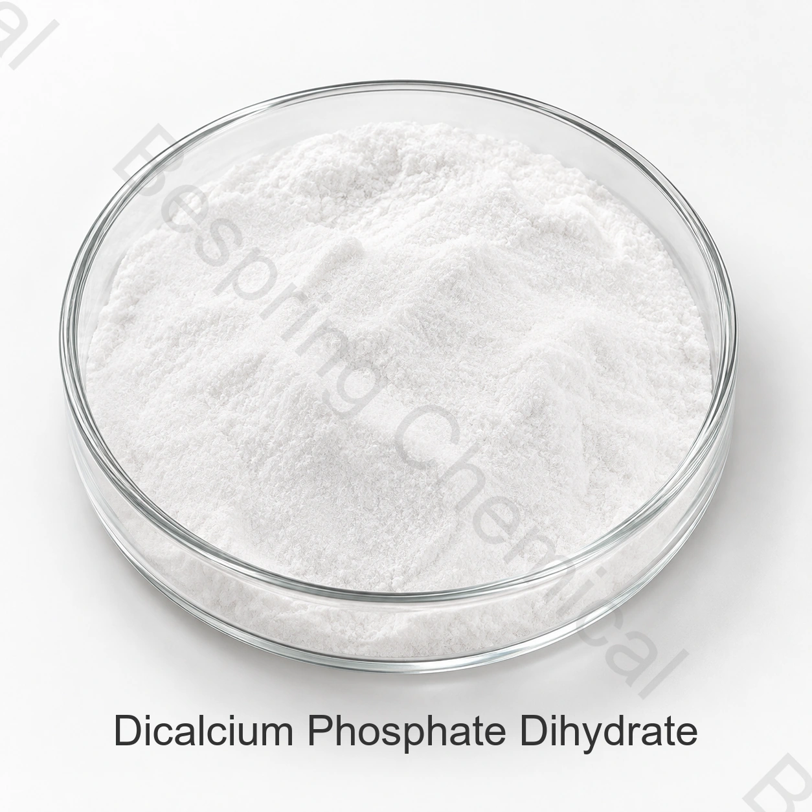

สูตรเสริมแร่ธาตุ
คัดกรองเป็นแหล่งแคลเซียมและฟอสฟอรัสเมื่อสูตรและกฎท้องถิ่นอนุญาต
ส่วนประกอบเกรดอาหาร · แคลเซียมฟอสเฟต · DCP
ไดแคลเซียมฟอสเฟตไดไฮเดรตเป็นรูปไฮเดรตของแคลเซียมไฮโดรเจนฟอสเฟต มีน้ำผลึกสองโมเลกุล ผู้ผลิตอาหารประเมินเป็นส่วนประกอบแคลเซียมฟอสเฟตสำหรับงานแร่ธาตุ บัฟเฟอร์ และแปรรูปที่เหมาะสม

ภาพผลิตภัณฑ์ · ยืนยันเกรดและบรรจุภัณฑ์เมื่อสั่งซื้อ
แจ้งเกรดที่แน่นอน การใช้งาน ปริมาณ บรรจุภัณฑ์ ปลายทาง และเอกสารที่ต้องการ
เกรดเกรดอาหาร โดยต้องผ่านการพิจารณาคุณสมบัติแหล่งผลิตที่แน่นอน
ข้อกำหนดขอเอกสารปัจจุบันได้จากฝ่ายขาย
แพ็คเกจยืนยันในข้อเสนอที่ระบุแหล่ง
หลักฐานประจำรุ่นมี COA ปัจจุบันสำหรับรุ่นที่จัดหา
ภาพรวมผลิตภัณฑ์
ไดแคลเซียมฟอสเฟตไดไฮเดรตเป็นรูปไฮเดรตของแคลเซียมไฮโดรเจนฟอสเฟต มีน้ำผลึกสองโมเลกุล ผู้ผลิตอาหารประเมินเป็นส่วนประกอบแคลเซียมฟอสเฟตสำหรับงานแร่ธาตุ บัฟเฟอร์ และแปรรูปที่เหมาะสม
ความเหมาะสมเชิงพาณิชย์ขึ้นกับแหล่งผลิตที่แน่นอน หน้าที่ที่ตั้งใจ กระบวนการอาหารทั้งหมด และกฎตลาดปลายทาง ต้องตกลงข้อกำหนดเฉพาะเกรดสำหรับคำสั่งซื้อและใช้ COA ประจำรุ่นในการรับสินค้า
การคัดกรองการใช้งาน
เลือกการใช้ที่อนุญาตในตลาดปลายทางและประเมินสมรรถนะในอาหารสำเร็จ
คัดกรองเป็นแหล่งแคลเซียมและฟอสฟอรัสเมื่อสูตรและกฎท้องถิ่นอนุญาต
ประเมินขนาดอนุภาค การไหล การแยกชั้น และความเข้ากันได้กับส่วนผสมทั้งหมด
ยืนยันพฤติกรรม pH ที่ต้องการและสมรรถนะของฟอสเฟตที่ละลายน้ำได้น้อยด้วยการทดลอง
ให้รูปแบบไฮเดรตและฐานวิเคราะห์ตรงกับสูตรและการแสดงฉลากที่อนุมัติ
ระบุไดแคลเซียมฟอสเฟตไดไฮเดรต CAS 7789-77-7 ในคำสอบถาม ใบเสนอราคาที่ระบุเพียง DCP ไม่ยืนยันว่าที่เสนอเป็นไฮเดรตหรือแอนไฮดรัส
คิดรวมผลของน้ำผลึกเมื่อเทียบแคลเซียมและฟอสฟอรัสที่ให้ ขอฐานวิเคราะห์ก่อนแปลงราคาส่งมอบเป็นต้นทุนแร่ธาตุ
สำหรับส่วนผสมแห้ง เปรียบเทียบขนาดอนุภาค ความหนาแน่นรวม และการแยกชั้น สำหรับอาหารเหลว ให้รวมตะกอนและความรู้สึกในปากในการทดลอง เอกลักษณ์เคมีเพียงอย่างเดียวไม่ยืนยันความเหมาะสมกับกระบวนการใด
เอกสารเชิงเทคนิค
Bespring Chemical ไม่เผยแพร่ข้อกำหนดผลิตภัณฑ์สำหรับส่วนประกอบนี้ทางออนไลน์ ติดต่อทีมขายเพื่อขอข้อกำหนดเฉพาะแหล่งผลิตหรือ TDS ฉบับปัจจุบัน และยืนยันเลขแก้ไข วิธีทดสอบ และเกณฑ์รับให้ตรงความต้องการซื้อ
ขอข้อกำหนดที่ลงนามหรือ TDS ฉบับปัจจุบัน SDS วิธีวิเคราะห์ COA ตัวแทน และ COA ประจำรุ่น
ตรวจใบรับรองความปลอดภัยอาหาร คุณภาพ ถิ่นกำเนิด สารก่อภูมิแพ้ Kosher, Halal และสถานที่ที่เกี่ยวข้องให้ตรงเกรดและแหล่งผลิตจริง
ทบทวน ดู บันทึกแคลเซียมไฮโดรเจนฟอสเฟตของ FAO/WHO JECFAจากนั้นใช้กฎตลาดปลายทางปัจจุบันกับอาหารสำเร็จที่แน่นอน
หมายเหตุการปฏิบัติตามกฎระเบียบ: ข้อมูลอ้างอิงเอกลักษณ์สากลไม่ได้อนุญาตทุกการใช้งานโดยตัวมันเอง ผู้ซื้อต้องยืนยันประเภทอาหาร ระดับใช้ การแสดงฉลาก และข้อกำหนดอื่นในแต่ละตลาดปลายทาง
การจัดเก็บและการจัดการ
คําถามของผู้ซื้อ
ไดแคลเซียมฟอสเฟตไดไฮเดรตเป็นรูปไฮเดรตของแคลเซียมไฮโดรเจนฟอสเฟต มีน้ำผลึกสองโมเลกุล ผู้ผลิตอาหารประเมินเป็นส่วนประกอบแคลเซียมฟอสเฟตสำหรับงานแร่ธาตุ บัฟเฟอร์ และแปรรูปที่เหมาะสม การจัดหาให้ยึดข้อกำหนดปัจจุบันที่ลงนามของแหล่งที่เลือก
CAS 7789-77-7; INS 341(ii); CaHPO4·2H2O หากชื่อครอบคลุมกลุ่มสารหรือสารผสม ต้องยืนยันชนิดและองค์ประกอบที่แน่ชัดก่อนอนุมัติ
สำหรับเกรดที่เสนอ ขอข้อกำหนดหรือ TDS ปัจจุบัน วิธีทดสอบที่เกี่ยวข้อง และเอกสาร COA ที่มี ยืนยันข้อกำหนดคุณภาพที่ตกลงก่อนสั่งซื้อ
ขอข้อกำหนดหรือ TDS ปัจจุบัน SDS, COA ตัวแทน COA ประจำรุ่น และใบรับรองความปลอดภัยอาหาร ถิ่นกำเนิด สารก่อภูมิแพ้ Kosher, Halal หรืออื่นที่เกี่ยวข้องกับแหล่งผลิตที่แน่นอน
ระบุเกรดหรือชนิดที่แน่นอน การใช้ ความต้องการสมรรถนะสำคัญ ปริมาณ บรรจุภัณฑ์ ตลาดปลายทาง เอกสารที่ต้องการ Incoterm และวันที่ส่งมอบที่ขอ
การจัดหาที่เกี่ยวข้อง
เลือกดูกลุ่มสินค้าทั้งหมดและข้อมูลผลิตภัณฑ์เทคนิคที่มี
หารือเกี่ยวกับข้อกําหนดผลิตภัณฑ์ เอกสาร ตัวอย่าง และความต้องการทางพาณิชย์
ทบทวนการจัดหาและสนับสนุนส่งออกสำหรับการจัดซื้อส่วนประกอบระหว่างประเทศ
การจัดหาที่อิงข้อกำหนด
แจ้งเกรดหรือชนิดที่แน่นอน การใช้ ข้อกำหนดสมรรถนะสำคัญ ปริมาณ บรรจุภัณฑ์ ปลายทาง และรายการเอกสาร เพื่อให้ได้ข้อเสนอที่เกี่ยวข้อง
แจ้งเกรดและตลาดปลายทาง เพื่อให้เรายืนยันเอกสารที่มีสำหรับคำสั่งซื้อของคุณ
ข้อมูลอ้างอิงภายนอกไม่ใช่ใบรับรองประจำรุ่นหรือข้อกำหนดผลิตภัณฑ์ Bespring